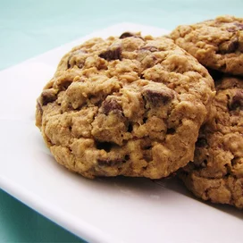

Oatmeal Cookies

Description
This is a healthy recipe and tasty as well. Oats is a good ingredient for overall health and hence worthy to try.
Ingredients
- 1 cup butter, softened
- 2 eggs
- 1 ¼ cups all-purpose flour
- 1 cup semisweet chocolate chips
Steps
- Preheat the oven to 325 degrees F (165 degrees C).
- In a large bowl, cream together the butter, brown sugar, and white sugar until smooth. Beat in eggs one at a time, then stir in vanilla. Combine the flour, baking soda, and salt; stir into the creamed mixture until just blended. Mix in the quick oats, walnuts, and chocolate chips. Drop by heaping spoonfuls onto ungreased baking sheets.
- Bake for 12 minutes in the preheated oven. Allow cookies to cool on baking sheet for 5 minutes before transferring to a wire rack to cool completely.